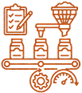

O que é agricultura em larga escala?
A agricultura em larga escala é um modelo de produção agrícola realizado em grandes áreas e voltado para produzir grandes quantidades de alimentos e matérias-primas. Geralmente utiliza máquinas, tecnologias, sistemas de irrigação, fertilizantes e técnicas de manejo para aumentar a produtividade. Ela é importante para atender à demanda de uma população crescente e abastecer mercados nacionais e internacionais
Como Funciona?
-
Mecanização
Máquinas como tratores, colheitadeiras e plantadeiras permitem trabalhar grandes áreas com maior rapidez.

-

Irrigação
Sistemas de irrigação fornecem água às plantações quando as chuvas não são suficientes.
-
Tecnologia
GPS, drones, sensores e imagens de satélite ajudam a monitorar as plantações e tomar decisões mais precisas.

-

Manejo do Solo
Técnicas como rotação de culturas e conservação do solo ajudam a manter a produtividade e reduzir a degradação.
Vantagens da Agricultura em Larga Escala
-
Alta Produtividade
Produz grandes quantidades de alimentos para populações urbanas.
-
Preços mais baixos
Economia de escala reduz custos para consumidores.
-
Disponibilidade Constante
Alimentos disponíveis o ano todo, menos sazonalidade.
-
Padronizaçõa

Produtos uniformes em qualidade e aparência.
-
Inovação tecnológicas
Incentiva desenvolvimento de maquinário, drones, sensores, IA.
-
Geração de empregos
Cria postos diretos e indiretos na cadeia produtiva.
Principais Produtos

Milho
O trigo é um dos cereais mais importantes do mundo, usado na produção de pães, massas, bolos e rações animais.
Dados e Estatísticas
-

Água
72%
da água doce retirada no mundo é destinada à agricultura. -

Perda de alimentos
13,3%
dos alimentos são perdidos globalmente após a colheita e antes de chegar ao consumidor. -

Desperdício
19%
dos alimentos disponíveis aos consumidores são desperdiçados.